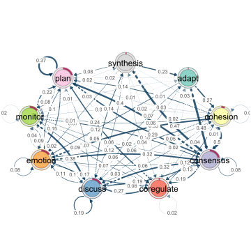
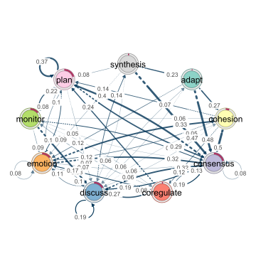
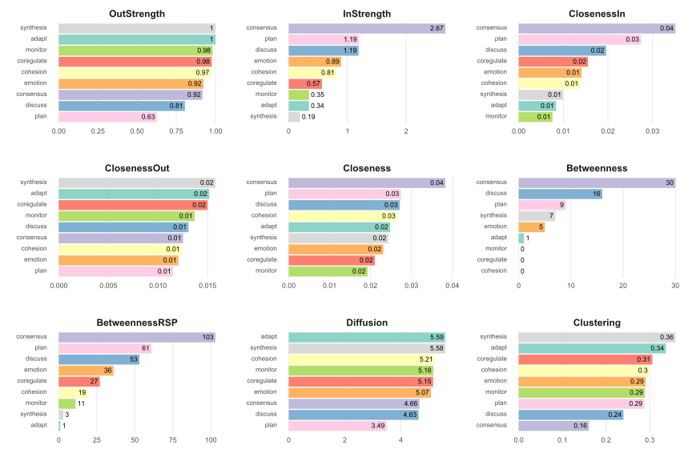
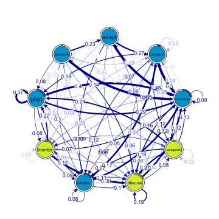
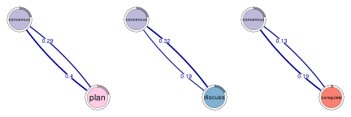

An R package for the analysis of relational dynamics through Transition Network Analysis (TNA). TNA provides tools for building TNA models, plotting transition networks, calculating centrality measures, and identifying dominant events and patterns. TNA statistical techniques (e.g., bootstrapping and permutation tests) ensure the reliability of observed insights and confirm that identified dynamics are meaningful. See (Saqr et al., 2025) for more details on TNA.

Installation
You can install the most recent stable version of tna from CRAN or the development version from GitHub by running one of the following:
install.packages("tna")
# install.packages("devtools")
# devtools::install_github("sonsoleslp/tna")Example
Load the library
Example data
data("group_regulation", package = "tna")Build a Markov model
tna_model <- tna(group_regulation)
summary(tna_model)| metric | value |
|---|---|
Plot the transition network
# Default plot
plot(tna_model) 
# Optimized plot
plot(
tna_model, cut = 0.2, minimum = 0.05,
edge.label.position = 0.8, edge.label.cex = 0.7
) Calculate the centrality measures
cent <- centralities(tna_model)| state | OutStrength | InStrength | ClosenessIn | ClosenessOut | Closeness | Betweenness | BetweennessRSP | Diffusion | Clustering |
|---|---|---|---|---|---|---|---|---|---|
Plot the centrality measures
plot(cent, ncol = 3)
Estimate centrality stability
estimate_centrality_stability(tna_model)
#> Centrality Stability Coefficients
#>
#> InStrength OutStrength Betweenness
#> 0.9 0.9 0.7Identify and plot communities
coms <- communities(tna_model)
plot(coms)
Find and plot cliques

Compare high achievers (first 1000) with low achievers (last 1000)
tna_model_start_high <- tna(group_regulation[1:1000, ])
tna_model_start_low <- tna(group_regulation[1001:2000, ])
comparison <- permutation_test(
tna_model_start_high,
tna_model_start_low,
measures = c("InStrength")
)Simple comparison vs. permutation test comparison
plot_compare(tna_model_start_high, tna_model_start_low)
plot(comparison)
Compare centralities
print(comparison$centralities$stats)| state | centrality | diff_true | effect_size | p_value |
|---|---|---|---|---|